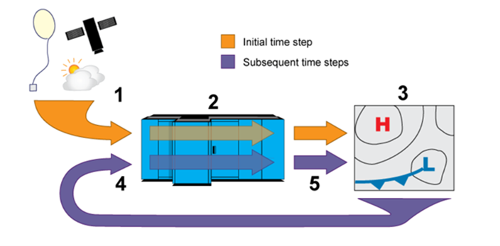
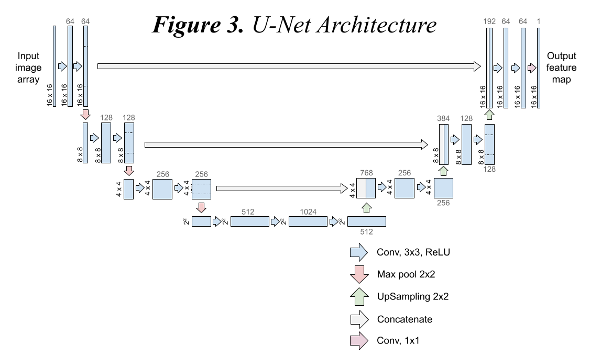

INTRODUCTION
space
NWP and Traditional Weather Forecasting
The majority of weather forecasts are created using Numerical Weather Prediction (NWP) models. These models first assimilate multiple sources of data including: geostationary and polar-orbiting satellites, weather stations, ground-radar stations, radiosondes, and more (NOAA, 2023). This data is used to construct a model of the current conditions of the atmosphere and oceans. This is known as the initial state. Then, using equations based on physics the NWP model computes the fluid dynamics of the atmosphere one timestep in the future (Shuman, 1989).These equations are non-linear and therefore discretized across a 3D grid to derive useful results, meaning a partial derivative is solved at each grid box. This process is repeated until the desired forecast is created. NWP models require high computational power and use supercomputers to solve these equations.
Figure 1. Simplified representation of NWP data processing pipeline (NOAA 2023).
The largest challenge with weather forecasting is maintaining high accuracy in weather prediction when forecasting far into the future. There are multiple factors that lead to decreased accuracy with increasing lead-time, or how far into the future the weather is forecasted. The physics-based equations can only account for atmospheric processes that occur at a large scale covering multiple or all gridboxes. These equations are also resolved explicitly, meaning the computer attempts to create a simpler equation that has a direct relationship between the dependent and independent variable. Based on the order of the time integration schemes that attempt to solve the equations, they are approximated to a degree to reduce computational constraint. These approximations are compounded each time a new timestep is computed.
However, the main problem lies in atmospheric processes that are either too complex to simply model with an equation, or occur at scales smaller than the grid spacing, meaning they cannot be properly discretized. Some examples of these processes include: radiative transfer schemes, convection, turbulence, cumulus cloud formation, cloud microphysics, and more (Arakawa, 2004). Instead, these processes and their effects are estimated in what is known as parameterization. Unfortunately, many of the processes that contribute to precipitation occur at the sub-grid scale and therefore make predicting precipitation a challenge even with all the advancements in NWPs. These factors along with the computational constraint that comes with attempting to increase the horizontal resolution (or decrease the grid spacing) leads to forecasts that cannot accurately model the weather with a lead time of over 7-10 days on average.
“A seven-day forecast can accurately predict the weather about 80 percent of the time and a five-day forecast can accurately predict the weather approximately 90 percent of the time. However, a 10-day…forecast is only right about half the time” (NOAA SciJinks, 2023).
Figure 2. Forecast Skill vs. Forecast Range (lead-time) for different types of forecasts (Lukas, 2020).
Figure 2. shows the different types of forecast models and their skill (i.e. accuracy) vs. their lead time. Weather forecasts, which are the focus of this research, have very high skill but decrease very quickly with lead-time. This differs from climate forecasts which have lower skill but maintain skill for much longer lead times.
Previous work involved analyzing parameterization schemes for the Weather Research and Forecasting Advanced Research Model (WRF-ARW) in a case study. This focused on a weather forecasting failure, seen on March 2, 2018, when a major snow-storm unexpectedly brought inches of snow to the Hudson valley and North-East United States. The National Weather Service blended warm and cold operational forecasts and created a forecast that predicted the precipitation in the region as a blend of snow and rain. However, the predicted snow depth in the Albany area differed by approximately 8-12 inches. As a result of the storm five people lost their lives and over a million customers lost power across the United States (Wochit, 2018).
Deep Learning for Weather Forecasting
Deep learning (DL) algorithms derive a relationship between variables in a large database to predict a selected variable. DL does not need to understand the physical relationships that create atmospheric conditions and instead derives its own equations between variables. This non-numerical processing can lower the computational constraint, as opposed to computing physics partial-derivative equations, and can better estimate processes that would be parameterized by taking historical data into account. However, in the same vein, the DL model can output a forecast that does not adhere to the laws of physics such as conservation of mass or energy (Lockwood, et. al 2024).
As a part of the CUNY NSF REU in Remote Sensing, under the mentorship of Yanna Chen, from the University of Albany, a dual convolution neural network model (CNN) in the U-Net architecture was created to predict precipitation and compare the accuracy of those predictions with observational data. The first part of the dual model is a classification model which produces the probability of rain or no rain at each grid point (Badrinath, 2023). This probability is thresholded at 0.5, which is common with sigmoid activation functions in the last layer of a neural network. Binary array is constructed of predicted rain or no rain points. That binary mask is then applied to the second part of the dual model, a continuous regression U-net which attempts to predict the numerical amount of precipitation at that grid point. This masks any numbers the regression U-net predicts in classified “no-rain” grid points.
Searching for Ground Truth
Currently the model uses The European Center for Medium Range Weather Forecasting (ECMWF) ERA-5 reanalysis dataset for both the input features and labels, we wish to predict, such as total precipitation. In order to post-process NWP output to be more inline with observational data, the labels need to be of the same size and shape as the features, particularly for the U-net architecture see Figure 3., above.
As weather station data is collected for that particular location, it is point data. Weather forecasts cover the entire domain, or region, that they are trying to forecast in a grid or array format. The value depicted in the grid box may be the value for the center point of the gridbox or average values for the entire gridbox, depending on the NWP model and the grid model used. Regardless, the point data needs to match the array shape and size of the forecast we wish to post-process.
Interpolation is the process of estimating values at unsampled locations between given points. To determine the best method for converting weather station point data to raster data, we analyze a number of interpolation techniques through the Geostatistical Analyst extension in ArcGIS Pro. To gauge a model’s predictive power we use cross-validation, a leave-one-out resampling method that first interpolates the data with all points to set model parameters and then removes one point at a time to predict the value at that point’s location and calculate the error with the actual value. A visual representation of cross-validation is shown in Figure 4.
Figure 4. A red point is hidden, and the value is predicted from the remaining points. This process is repeated for all points (ArcGIS Pro).